Вітальня · журнал «ДентАрт» 2024 №4
Президент Асоціації імплантологів України Євген Нєженцев: «Командна робота дає найкращі результати»
Сьогодні у Вітальні «ДентАрту» на читачів чекає зустріч з Євгеном Юрійовичем Нєженцевим, президентом Асоціації імплантологів України, досвідченим фахівцем у кількох галузях стоматології, передусім хірургічної, ортопедичної та дентальної імплантації, засновником і власником «Стоматологічної клініки лікаря Нєженцева» у місті Дніпрі.
Наша розмова – про те, як досягти значних успіхів у стоматології і, напружено працюючи, не зазнати психологічної втоми, а ще про те, на яких напрямках сьогодні зосереджує свої зусилля волонтерська стоматологічна спільнота на шляху до нашої спільної мети – визволення окупованих територій України та перемоги над агресором.
Стоматологія знайшла мене, і я її знайшов…
– Наша професія, як і багато інших, династійна, передається із покоління в покоління. І почалося це тоді, коли й стоматології як фаху ще не існувало, але вміння видаляти зуби передавалося із покоління в покоління в межах однієї родини, і секрети цієї процедури від сторонніх берегли, бо ж це був добрий заробіток. А як Ви знайшли стоматологію? Чи вона знайшла Вас?
– Вона знайшла мене, і я її знайшов. У мене батьки – не стоматологи, вони педагоги, але мій дідусь Євген Іванович Нєженцев був зубним техніком, починав працювати ще до Другої світової війни. У 1939 році репресували його батька. Євгенкові однокласники після восьмого класу пішли працювати на Краматорський машинобудівний завод, а він, дізнавшись, що протезист (тоді була така професія) шукає собі учня, пішов 14-річним працювати помічником цього протезиста. Допоміг таким чином своїй родині вижити, бо його мати, моя прабабуся, була домогосподаркою, а ще була менша сестричка.
Ось так він знайшов стоматологію. Коли почалася війна, він як ополченець захищав місто Дніпро, будував укріплення. Їх кинули напризволяще під час відступу біля Павлограда, і там він опинився в окупації. Євген зі своїм другом пішки прийшли додому, у Слов'янськ, який також був під німецькою окупацією. Друг його батька влаштував Євгена працювати на залізницю, бо ж усю молодь відправляли в Німеччину як гастарбайтерів. А коли Слов'янськ звільнили від гітлерівців, він пішов добровольцем на фронт і повернувся додому лише в 1947 році. І він був єдиним протезистом, тобто стоматологом-ортопедом, на великій території – вів прийом на різних станціях від міста Краматорська до селища Близнюки на Харківщині, бо працював у структурі охорони здоров'я працівників залізниці. Вставав о п'ятій ранку, їхав на роботу, повертався додому і в майстерні штампував коронки, робив протези… Отака у нього була нелегка доля. Дідусь для мене – знакова фігура, тож хочу, щоб усі трішечки знали про нього.
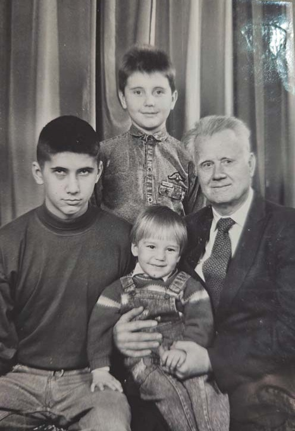
Потім, коли відбулося розділення на ортопедів і зубних техніків, Євген Нєженцев працював зубним техніком і з часом став старшим у лабораторії, впроваджував удосконалення та нові технології, робив і свої раціоналізаторські пропозиції… Він завжди був шанованим фахівцем, і в книзі про видатних громадян Слов'янська, яку видали у 2000-х роках, про нього є стаття. Я ним дуже пишаюся. У дитинстві я дуже багато часу провів з дідусем і прагнув бути схожим на нього. Тому хотілося стати не космонавтом, не вчителем чи письменником, а зубним техніком, як він.
Після школи я вступив у Дніпродзержинське медучилище (тепер це Кам'янський медичний коледж), отримав освіту зубного техніка. Відразу після школи навчатися у вузі не мав жодної можливості: була середина дев'яностих, складні часи, документи подавалися лише в один заклад, у медакадемію на бюджет вступити не було надії, а мої батьки не могли оплачувати мій контракт на той час. Тому і розпочав навчання в медичному училищі, а паралельно підробляв зубним техніком, і не тільки…
На щастя, у 1998 році фінансове становище родини поліпшилося, батьки змогли допомогти мені отримати вищу освіту, і я розпочав навчання у Дніпропетровській державній медичній академії. Інтернатуру з ортопедичної стоматології я проходив на базі Української медичної стоматологічної академії у Полтаві на кафедрі післядипломної освіти. Коли вступив на інтернатуру – одружився, у мене з'явилася своя родина. Я не міг сидіти на шиї у батьків, бо настала пора навчатися моєму молодшому братові Артему. А два студенти в родині – непроста ситуація на той час була. Мені нічого не залишалось, окрім як наполегливо працювати лікарем удень і зубним техніком – увечері і вночі. Моя родина – моя відповідальність. Під час навчання в інтернатурі у мене народилася донька. І це також мене додатково дуже мотивувало до розвитку.
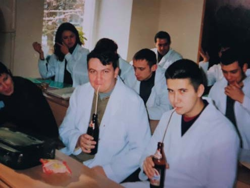
Моя робота – моє хобі!
– А як серед багатьох стоматологічних спеціалізацій Ви обрали саме хірургію?
– Спочатку я був, як риба у воді, у протезуванні, ортопедичній стоматології. Це у мене виходило, а коли робиш те, що виходить, подобається, то отримуєш задоволення. І мені це справді подобалося. Ясна річ, коли я був ще студентом і починав працювати лікарем, то набував досвіду і «набивав руку» у найпростіших, як мені здавалося на той час, маніпуляціях, це те, з чого починають усі стоматологи: гігієнічний догляд, зняття зубних відкладень, лікування карієсу…
Студентом я читав журнал «ДенАрт» і бачив, як можна робити художні реставрації, і не по одному зубу. Будучи на третьому курсі, прочитав у «ДентАрті» про комплексний підхід до реставрації зубів, і мені захотілося бути у тренді і спробувати зробити реставрацію одразу на шести верхніх фронтальних зубах. Запропонував сусідці: «Хочеш, передні зуби тобі полікую, зроблю гарні реставрації?». Вона була рада. Сусідка ця була і є вродливою, доброю, її всі у будинку любили. Я купив матеріал Енамел Плюс, італійський, на «Спектрум» у мене грошей не вистачило. На кафедру так надовго попрацювати мене б не пустили, тож звернувся за допомогою до друга, який мешкав у селищі біля Дніпра, у нього стоматологічна установка стояла посеред літньої кухні й інструменти були.
Приїхали, я роблю пацієнтці препарування, ретельно і довго, зняв з передніх зубів старі пломби, роблю некротомію… Перед тим, як встановлювати рабердам, ідемо на вулицю подихати повітрям та перепочити. Спілкуємося, жартуємо... Дівчина усміхається мені, і я бачу, що переді мною не вродливиця, а зовсім інша людина, коли з дірками на фронтальних зубах… Одразу закінчив відпочинок і пішли реставрувати, бо час для закінчення роботи був потрібен. Тоді я зрозумів, як усмішка впливає на сприйняття людини і яка ще одна важлива місія є у лікаря-стоматолога. Естетика – невід'ємна складова сучасної стоматології. Уже багато, багато років…
До речі, та моя студентська перша комплексна реставрація була успішною, прослужила без коригування вісім років, доки я не оновив її, будучи вже лікарем.
Я багато читав, розвивався, освоював біоміметичні принципи. Хотілося йти до чогось нового, того, що ти опановуєш і починаєш досягати успіхів. У мене шлях був від зняття зубних відкладень і ортопедичної стоматології до терапевтичної стоматології, реставрації, ендодонтії, потім я перейшов до хірургії, від простих маніпуляцій до складних.
Аж не віриться, що перше моє знайомство з хірургією було шокуючим. На другому курсі я попросився в операційну щелепно-лицьового відділення лікарні, щоб подивитися на справжню операцію. Мені дозволили, але сказали, щоб узяв бахили, простерилізований костюм. Костюма у мене не було, був халат. На той час я взагалі не знав, що таке бахили, це тепер вони скрізь є, і одноразові, а тоді, як з'ясувалося, це були чоботи, зшиті з якогось простирадла. Не знав, які вони на вигляд і де їх брати, але дуже хотів потрапити на операцію. Бачу ціль – не бачу перешкод… Довелося купити бахили у медсестри в лікарні. Простерилізував «хірургічний костюм» – бахили, мої світлі штани та студентський халат – методом прання та прасування, склав у новий пакет, купив одноразову маску і прийшов в операційну.
Потрапив на операцію, де пацієнтці видаляли шийні лімфатичні вузли. Жінці зробили розріз на шиї, розтягнули, розвели краї рани і працювали. Я гадав, що пацієнтка під загальним наркозом, стою, дивлюсь, а дихати в масці стає важкувато. Думаю, до маски треба звикати… Лікарі заспречалися, бо було складно, а жінка з операційного стола раптом каже: «Покажіть мені мої лімфовузли…». Тут мені взагалі перехопило подих. Медсестра каже: «Хлопчику, хлопчику, ану йди, посидь в ординаторській!». Я ще опирався, але вона мене видворила. В ординаторській глянув у дзеркало, а в мене обличчя біле, мов крейда. Я ледь не знепритомнів, так важко було все це сприймати…
Я тоді подумав, що хірургом не буду ніколи, це не моє, буду розвиватися в інших напрямках.
Але сьогодні хірургія у стоматології мене надихає, я отримую справжнє задоволення від того, що роблю. На роботі я втомлююся тільки тоді, коли від тривалих зусиль починають боліти спина, шия чи очі, а сам процес лікування мене надихає. Я можу сказати, що моя робота – моє хобі! Я роблю те, що мені подобається. Повертаю людям здоров'я і красу.
Мене збадьорює найбільше не кава, а та операція, яку маю зробити. Відкрив рану – мобілізуюсь, щоб виконати все правильно. Думки зосередив, закрив, усе завершив успішно – тоді гормональний сплеск…
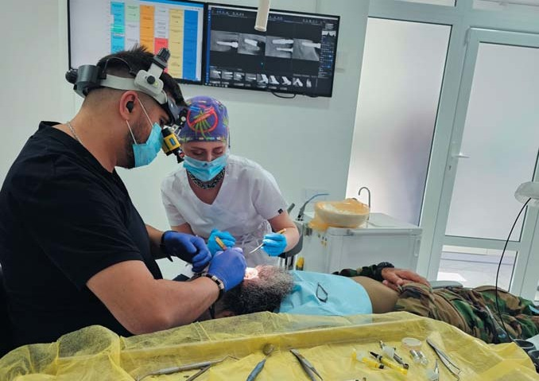
Усі базові науки, які я вивчав, нині сяють новими барвами…
– Повернімося до теми університетської освіти стоматологів. Університет закладає основу, формує клінічне мислення… А чи стають Вам у пригоді ті знання, які Ви отримували на перших курсах: фізика, хімія, біохімія, гістологія?..
– Усе стало в пригоді. Щоразу повертаюся до базових дисциплін, заповнюю прогалини в знаннях і те, що забулося, коли стикаюся з новими напрямками або незрозумілими клінічними випадками. Дива в медицині трапляються дуже рідко. Більшість усього, що відбувається, можна пояснити, але потрібно багато знати, клінічно мислити. Базові дисципліни – це основа.
Запам'ятався випадок, коли ще був інтерном. У приватній клініці, де я працював техніком і лікарем, мені дали завдання підготувати доповідь на тему процесу адгезії різних матеріалів до тканин зуба. Для мене важливо було розібратися, як відбувається адгезія до емалі, дентину, як це відбувається з цементами та композитними адгезивними системами різних поколінь. Читав про це статті в «ДентАрті», інструкції виробників, статті в інтернеті, але інформації для детального, глибокого розуміння основ було замало. І тоді я пішов у гості до мого викладача біохімії на кафедру, він допоміг мені зрозуміти суть процесу – на рівні реакції малеїнової кислоти з гідроксиапатитом. Доповідь колегам я прочитав і зміг їх вразити, бо вони так глибоко в цю тему не занурювалися.
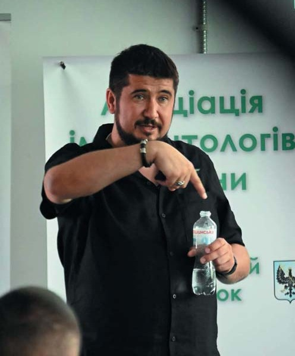
Це тільки одна складова освіти, що стала основою мого практичного досвіду. Хірургічна стоматологія не існує без глибоких знань з анатомії, розуміння фізіологічних процесів, основ гістології. І чим екстремальніші ділянки ми починаємо використовувати, тим частіше заглядаю до атласу.
Ортопедична стоматологія не існує без біомеханіки, ми маємо розуміти і коректувати комплексну роботу жувального органу, а це і анатомія, патологічна анатомія, фізіологія, патологічна фізіологія, біофізика, хімія, матеріалознавство і т. д. Знання на всіх напрямках стоматології мають бути підкріплені знанням основ, процесів. Basis у перекладі з латини – ОСНОВА. Тому згадані дисципліни і називають базовими. Тож можу сказати: усі базові науки, які я вивчав, нині сяють новими барвами… І на кожному етапі свого становлення я повертався до чогось із вивченого в студентські роки, шукав нову інформацію, читав, якщо відчував, що маю якісь прогалини у знаннях. Це важливо!
Хочу сказати, що мені дуже пощастило, що на другому курсі нам провели психологічне тестування. І кожному сказали, на що слід звернути увагу, щоб стати успішним стоматологом. Мені сказали: «Євгене, ти будеш гарним лікарем, у тебе широкий кругозір, ти знаєш багато речей, але якщо зануритися глибше, то ти не звертаєш уваги на деталі, нюанси… Ти маєш дивитися в корінь усіх ситуацій. От чуєш ти якесь незнайоме слово – занотуй його, подивись у словник, з'ясуй, що воно означає. З цим розібрався – і далі йдеш…».
Те, що мені тоді порадили, зіграло дуже велику роль у моєму житті. Я завжди намагаюся докопатися до суті і тоді розумію, які процеси відбуваються і що буде далі…
І дуже важливо, маючи ґрунтовні знання з анатомії, біології, біохімії, розуміти, що відбувається в організмі людини під час лікування, щоб досягти успіху, застосовуючи комплексний підхід, ефективні і мінімально інвазивні методи.
– І саме на цьому підґрунті Ви задумали виконати наукове дослідження… Нині, наскільки я знаю, Ви на завершальному етапі цієї першої сходинки у науковій кар'єрі і невдовзі маєте захищати здобуття наукового ступеня. Що нового і важливого можна буде дізнатися з Вашої наукової роботи?
– Свою наукову роботу я планував не як присвячену чомусь високому та незрозумілому для лікаря-практика, а як таку, що може допомогти колегам у їхній практичній діяльності. Мені дуже сподобалося те, що я почув від професора Вільнюського університету Томаса Лінкевічуса. Він ще молода людина, може, на якихось два роки старший від мене, завідувач кафедри ортопедичної стоматології, і якось чую від нього: «Ну, я там найстаріший професор…» – «Як це?» – «Так у нас усіх радянських професорів звільнили, бо вони нічого видатного не вміли робити, тільки знали теорію, котра не була пов'язана з практикою, а справжній професор має практичними роботами доводити свої наукові висновки».
Я вивчаю теорію, маю мануальні навички та інтенсивну практичну діяльність. Пишу наукову роботу з дослідження процесів, які відбуваються навколо дентальних імплантатів, встановлених у лунку видаленого зуба, протягом певного часу. Як трансформується кістка, на що перетворюється кістковопластичний матеріал, в якій кількості і за рахунок чого зберігається об'єм тканин…
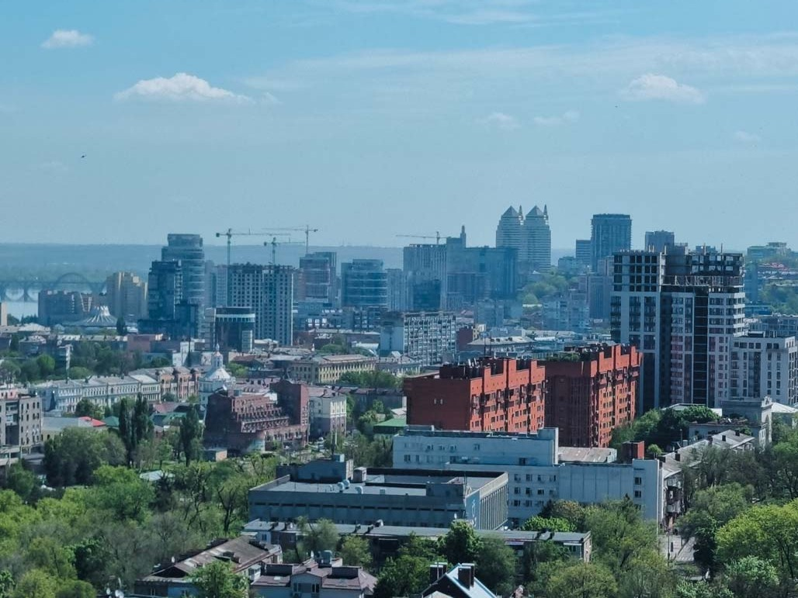
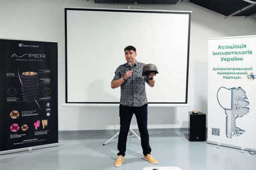
Тема актуальна. Стане в пригоді практикуючим лікарям, допоможе досягати прогнозованих довгострокових результатів.
Коли я розпочинав працювати лікарем, мені казали, що пломба має стояти мінімум п'ять років, але якщо гарна, то й десять прослужить, а потім починається деградація гібридного шару і потрібно її міняти. Для мене 10 років – це стандарт. Усе має бути надійно. Я прагну, щоб усе, що роблю, було зі знаком якості, працювало надійно, як швейцарський годинник. А для цього слід враховувати всі нюанси, знати і розуміти їх.
Головне завдання – активізувати роботу Асоціації у всіх регіонах
– Євгене, як у Вас виникло бажання проявити свої організаційні здібності саме в роботі громадської організації? Ви рік очолюєте Асоціацію імплантологів України. Що важливого Ви перейняли від попереднього президента, на чому зосереджуєтеся у своїй каденції і що хочете передати наступному президентові?
– Я отримав від попереднього президента Мар'яни Білик впорядковану систему роботи Асоціації, порядок у фінансах, у процесах із членством. Це дуже добре, і за це я вдячний їй. А коли я вступив в організацію, нею керували Євген Шелест і Валерій Смаглюк. Від Євгена Шелеста я перейняв його наполегливість, при ньому Асоціація набула високого статусу, а Валерій Смаглюк для мене приклад, як сприяти тому, щоб колеги на місцях могли розкрити свої таланти, як зробити діяльність Асоціації ефективною у всіх регіонах України.
На жаль, коли почалося повномасштабне вторгнення рашистів, робота Асоціації ускладнилася, деякі чудові задуми Мар'яни Білик довелося відкласти, і все ж вона дуже ефективно відпрацювала свою каденцію, багато чого встигла зробити. У мене як президента теж є складнощі, особливо зараз. Головне моє завдання – активізувати роботу Асоціації у всіх регіонах. Це моя мета, моя програма! І ми багато чого вже зробили.
А починалося все з того, що я активізував роботу Асоціації у Дніпрі. Бо було так: у Запоріжжі, Харкові, Києві, Полтаві, інших містах відбувалися симпозіуми, конференції, семінари, курси імплантологів, а у нас ніхто ні з ким не спілкувався, імплантологи не обмінювалися досвідом, хіба що конкурували між собою за пацієнтів…
Мене обрали головою Дніпропетровського підрозділу Асоціації імплантологів України у 2019 році. На той час в осередку організації у Дніпрі було з десяток лікарів, а наприкінці року стало вже 80! Почали проводити засідання, все зрушило з мертвої точки, колегам сподобалося. Ми спілкувалися, навчалися, відпочивали, їздили на заходи, стали друзями, впровадили правила взаємовідносин та підтримки. Нам вдалося згуртувати спільноту імплантологів, і не тільки, і на другий рік мого головування, у 2021 році, у Дніпрі було вже 180 асоціатів. Того року мене висунули кандидатом на посаду президента, і професійна спільнота мене обрала президентом-електом. У 2023 році я прийняв повноваження президента Асоціації імплантологів України.
Моя мета – передати досвід нашого регіону всій Україні. Якщо в Дніпрі це спрацювало, то чому не спрацює в інших містах?! Ясна річ, тут дуже багато залежить від лідера, який очолює осередок організації. І від ситуації в країні, звісно. Але першочергово від лідера. Найактивнішу діяльність ведуть Сумський, Донецький, Запорізький, Дніпровський, Чернігівський, Полтавський, Миколаївський підрозділи Асоціації імплантологів. Не найспокійніші міста, ризики… Але лікарі об'єднуються.
Активно працюють підрозділи і в Чернівецькій, Львівській, Хмельницькій, Вінницькій, Київській, Житомирській, Волинській, Черкаській областях. Деякі регіони на перезавантаженні. Луганський працює, але лікарі розосереджені по різних містах. Незважаючи на труднощі воєнного часу, будемо працювати далі.
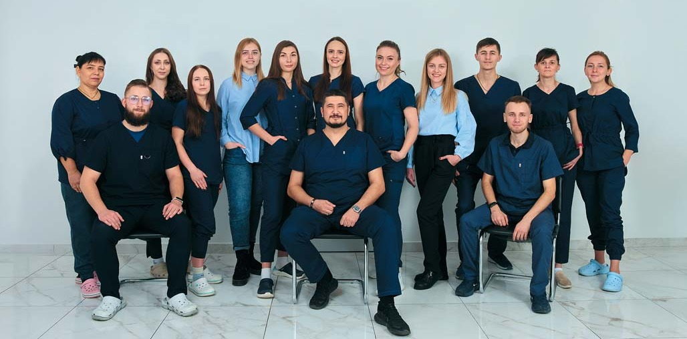
Моє правило: швидше і якісніше!
– Нещодавно Ви відкрили у Дніпрі свою клініку у багатоповерхівці… На якому поверсі?
– 23 і 24 поверхи. Найвища клініка України. У мене є сусід-колега на 23-ому поверсі через стіну, але на 24-ому немає нікого!
– Я бачив клініку вище лише колись у Гонконгу… Лідер, власник, той, хто дав ім'я клініці, Ви тепер позиціонуєте себе як щелепно-лицьовий хірург, хоча спробували себе на інших багатьох напрямках стоматології. У чому проявляється така спеціалізація клініки?
– Спеціалізація клініки для мене важлива, але така, щоб це був комплексний підхід. Я знаю, як робити складні операції. Коли пацієнт звертається за допомогою, то не буває такого, щоб йому тільки дентального імплантата для повного щастя не вистачало. Приходить людина, у неї комплекс складнощів, які лікар-стоматолог має усунути. Якщо працює один спеціаліст, він не зможе забезпечити видатні результати по всіх напрямках. Але якщо працює команда професіоналів і кожен зосереджується на своєму напрямку, це веде до успіху. Саме так: командна робота дає найкращі результати, бо вона і забезпечує якість лікування, і скорочує його тривалість.
Таке моє правило, воно від діда до мене перейшло... Коли я йому показував, як штампую коронки, він казав: «Ти дуже добре це робиш, але довго... Кожного разу думай, як зробити це швидше і якісніше».
І це тепер моє правило: працюєш – і думай, як зробити наступного разу швидше і якісніше!
Важливо, щоб людина, яка звертається за стоматологічною допомогою, в одному місці отримала максимально повний її комплекс. Лікування карієсу, ендодонтичне лікування, реставрації, протезування, функціональна стоматологія… Ти розумієш, як надати людині максимальну допомогу і зробити її здоровою та щасливою…
– Отже, лідер клініки зі спеціалізацією в імплантології не змушує клініку займатися тільки цим… А чи стоїть десь у Вашій клініці столик, щоб, роблячи коронки, переключитися на щось інше, зняти стрес?
– Ні спортзалу, ні боксерської груші у клініці немає, але є люди, які одне одного підтримують. Ми знаємо одне одного багато років і завжди можемо знайти слова, щоб зняти напруженість, подарувати якусь гарну емоцію і вивести колегу зі стану втоми і стресу на позитив.
Я дуже поважаю і люблю мій колектив. Мої колеги не лише гарні спеціалісти і професіонали, але ще й розумні, порядні люди і справжні друзі.
Дякую за запрошення в ICD!
– Організація, яка впроваджує високі етичні норми у стоматології, в практику, освіту, комунікацію між стоматологами – це Міжнародна колегія стоматологів, ICD. І Ви цьогоріч стали її членом. А головна функція цієї організації – підтвердження заслуг стоматологів перед професією і перед суспільством. Ваша доповідь про волонтерську активність дніпровських стоматологів на цьогорічному гуманітарному форумі за програмою щорічної зустрічі Європейської секції ICD справила неймовірне враження на учасників. І до мене підходили учасники зустрічі, щоб висловити солідарність, і вам, гадаю, багато чого доброго було сказано. Яке враження у Вас було від авдиторії форуму?
– Я дуже задоволений, що приєднався до ICD. Дякую за запрошення! Приємно долучитися до спільноти визнаних, заслужених лікарів, небайдужих до того, що відбувається в їхніх країнах і світі, стати її частиною. Але трішечки здивувало те, що дехто з присутніх не розумів, що відбувається з 2022 року в Україні, яка є загроза світовому порядку, демократії і гуманізму в усьому світі. Багато хто на форумі підходив і говорив: «Ми не знали, що все так складно, нам ніхто цю інформацію не подавав». Отже, навіть у стоматологів деяких країн, людей загалом освічених, є інформаційний вакуум. Тому нам потрібно доносити до міжнародної стоматологічної спільноти інформацію про наші проєкти, ініціативи, тоді й колеги з інших країн будуть до нас приєднуватися.
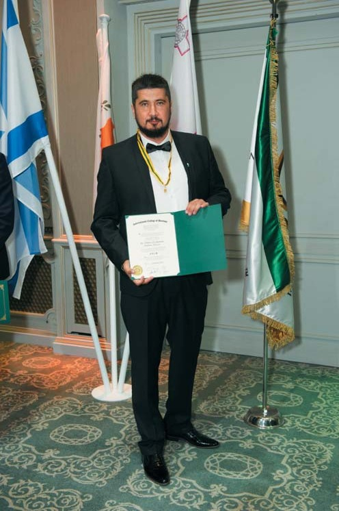
Основна наша волонтерська робота нині – кваліфіковане лікування військовослужбовців
– Нам усім добре відомий такий стоматологічний волонтерський проєкт, як ТриЗуб… У яких напрямках діє стоматологічне волонтерство нині, коли добігає кінця вже третій рік повномасштабного вторгнення російського агресора в Україну?
– ТриЗуб 1 – організація, яку створили в Запоріжжі за ініціативою Мирона Угрина, Ігоря Ященка і Василя Мєзенцева. А потім Дніпро і Запоріжжя створили ТриЗуб 2 – ініціатори Володимир Стефанів із Запоріжжя і Артем Похил з Дніпра. Коли почалося повномасштабне вторгнення рашистів, пересувні стоматкабінети ТриЗуба 1 з Карлівки змогли вивезти, а з Маріуполя, Широкиного не встигли: хотіли забрати обладнання, але наші військові Артема не пропустили, було вже небезпечно…
Коли почалося повномасштабне вторгнення, люди були шоковані, розгублені, і наша Асоціація у Дніпрі зіграла свою роль в об'єднанні українців, зокрема стоматологів нашого регіону, для відсічі окупантам. Ми збирали кошти для допомоги ЗСУ, допомагали шпиталю, в якому є стоматологічне відділення.
Спочатку зосередилися на допомозі медичним закладам і щелепно-лицьовим відділенням, які приймали поранених, всюди, де тільки могли, медикам у військових частинах. Потім стали допомагати і військовослужбовцям-стоматологам, котрі надавали допомогу близько до лінії фронту. А потім стали і самі їздити надавати таку допомогу бійцям під час ротації. Донатили та залучалися до зборів коштів. Купували на зібрані кошти не лише медичні витратні матеріали, а й потрібні нашим захисникам автомобілі, дрони, все, чого вони потребували… Зараз менше купуємо автівок, а більше ремонтуємо їх.
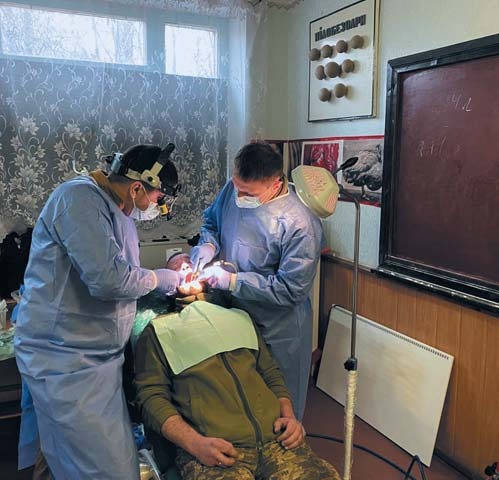
Коли росіяни намагалися атакувати Миколаїв, я зателефонував своєму пацієнтові із ТриЗуба, якого ми в Карлівці лікували, він був з бригади морської артилерії, яка тоді воювала в Донецькій області, а взагалі базується в Миколаєві (це вони, до речі, потопили крейсер «Москва»!). Він начмед, і я запитую, що їм потрібне. Він каже: «Все нормально, але готуємося відбивати атаку, бійці в полях працюють, холодно, потрібні антибіотики, протизапальні препарати…». Телефоную нашій колезі з Дніпра, яка тільки переїхала до Миколаєва, Анні Настаченко, і кажу, що треба допомогти. Вона зібрала всі потрібні медикаменти і відвезла. Уранці начмед телефонує і дякує. Питаю, як справи. А він каже: «Хочу похвалитись. Ми відбилися!».
Це була новина, що подарувала надію. Бо коли до цього чули, що ворог уже в Мелітополі, дійшов до Василівки, то були розгублені. А тут Миколаїв захистили! Надія з'явилася…
Основна наша робота нині – це кваліфоване лікування військовослужбовців. Тому що вже є багато пересувних стоматкабінетів, мобілізували багато лікарів-стоматологів, які працюють у підрозділах, бригадах… Але їм не вистачає часу, обладнання, уміння і досвіду для складних робіт, що потребують високої кваліфікації. І тут на допомогу приходить наша спільнота. Не раз буває, що телефонують воїни, кажуть, що збираються приїхати на лікування, їх троє, запитують, чи приймемо. Звичайно, якщо троє, то це досить напружено, але допомогу нашим захисникам слід надати. І ми, і колеги із Запоріжжя, Харкова, інших міст у своїх клініках відновлюємо стоматологічне здоров'я наших захисників, красу усмішок, і це нині основний напрямок наших волонтерських зусиль.
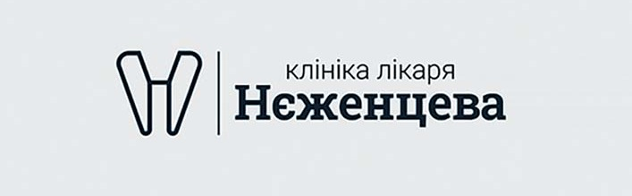
Моя родина – це як бальзам на душу…
– А родина наскільки Вас підтримує у Вашій громадській і лікарській роботі?
– Я не дуже залучаю свою родину до тієї роботи, що пов'язана з колосальним напруженням, і фізичним, і емоційним. Але я завжди маю підтримку вдома. Моя родина – це як бальзам на душу… Дружина Олена мене дуже підтримує, вона за фахом психіатр і знає всякі штучки, як не давати мені сумувати та вигорати. Мені дуже пощастило мати розумну та люблячу дружину. Я знаю, що мене чекають, я знаю, що мене люблять, і це найголовніше для кожного чоловіка.
– Чи Ваші діти за принципом династійності обрали стоматологію?
– Так, обрали. У мене троє дітей: Анні 20 років, Єлисеєві 17, а Єві – 11. Мені, ясна річ, хотілося, щоб вони пішли по моїх стопах. Дружина казала: «Хай вони будуть, ким захочуть, аби були щасливі». Я, звичайно, погоджувався, але все одно своїми мотиваціями, і прямими, і непрямими, намагався донести до них, яка класна у мене робота, своїм прикладом прагнув заразити їх любов'ю до стоматології. І Аня без жодних сумнівів вирішила вступати на стоматологічний факультет, але не добрала одного бала із ЗНО з математики, і тому пішла в медичний коледж, де я навчався. Це нормальний старт. Перший курс їй не вдалося закінчити – почалося повномасштабне вторгнення. У 2023 році Аня вже вступила в наш рідний Дніпровський державний медичний університет, нині вона студентка третього курсу стоматологічного факультету.
Син спочатку не хотів бути стоматологом, казав, що йому більше подобається готельно-ресторанний бізнес, він любить і сам готувати… Усе змінилося після того, як я його взяв на виїзне засідання Асоціації імплантологів України, що відбувалося у Буковелі. Ми провели конференцію, а наступного дня поїхали в гори, вантажівкою завезли намети, пригощання, генератори, музичне обладнання і навіть музикантів, і на вершині гори, на плато, за 300 метрів від кордону з Румунією, з висоти споглядаючи кілометрів 50 рідної, такої красивої України, відпочивали, веселилися… Незабутні емоції! Син мав можливість бачити моїх колег, розуміти, які це люди…
Після тієї поїздки ми стали розмовляти з Єлисеєм на стоматологічні теми, він тепер займається 3D друком, працює як зубний технік, друкує хірургічні шаблони, тимчасові коронки, їздить на конференції, дивиться, слухає, робить висновки і розвивається… І він теж вступатиме в наступному році, після закінчення школи, на стоматологічний факультет, в який університет, ще не знаємо.
– Будемо тримати кулачки!.. А Єві, ясна річ, ще рано думати про вибір професії…
– Вона у нас художниця, робить інсталяції. У неї так: щось побачила, своїми руками таке зробила, у неї з моторикою дуже добре…
– А це саме те, що потрібно стоматологові…
– Я теж сподіваюся на це…
– Ви вже дещо сказали про те, як у клініці Ви і Ваші колеги підтримуєте одне одного і знімаєте таким чином стрес, як допомагає у цьому родина… Де ще Ви берете енергію, щоб відновлювати сили?
– Коли енергія закінчується, потрібно підкинути палива. Для мене таке паливо – емоції, які я отримую під час подорожей, коли бачу нових людей, нові місця, читаю історію тих країв, де буваю. От ми з Вами коли побували у визначних місцях Полтави, скільки нової для мене інформації я отримав! І з нею вливалася в мою душу позитивна енергія… Для мене все було цікаво: полтавські собори, музеї, пам'ятники… Навіть той пам'ятник свиноматці з поросятами біля Інституту свинарства…
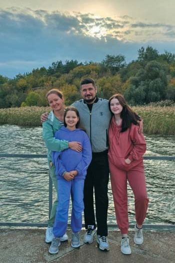
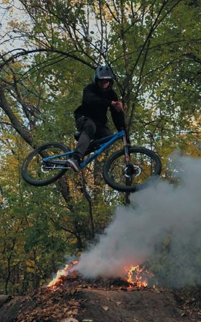
Хай натхнення не полишає вас, колеги!
– Це число «ДентАрту» вийде під Новий рік, 2024-й ми проводжаємо, яким би тяжким він не був, і всі свої надії покладаємо на рік наступний. То які у Вас будуть побажання читачам журналу «ДентАрт»?
– Найголовніше побажання – щоб ми всі прокидалися не під звуки сирен, а в мирній країні, щоб не гинув цвіт української нації у війні. Це найзаповітніше бажання і моє, і всіх українців. І тоді ми, стоматологи, зможемо дивитися у майбутнє, планувати свою діяльність, знати, що нас очікує, і дарувати здоров'я і красу усмішки ще більшій кількості співвітчизників. А ще, дорогі колеги, хочу побажати кожному з вас знайти та опанувати той напрямок у стоматологічній роботі, який буде приносити вам справжнє задоволення, бо, досконало володіючи найсучаснішими технологіями, матимете гарні результати, яким будете радіти. І натхнення не полишатиме вас, робота буде для вас відпочинком, хобі, наснагою… Я так працюю і вам того ж бажаю!
– Дякую, Євгене, за інтерв'ю! До нових зустрічей!